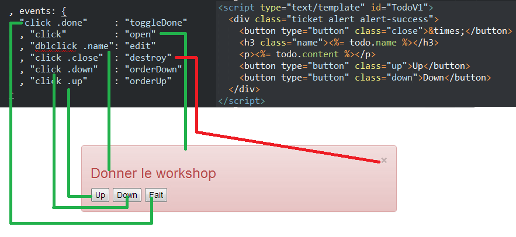
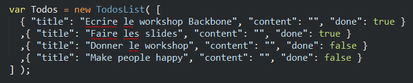

Workshop Backbone
Welcome :)
- Le singlepage et ses leader
- Premier pas avec Backbone
- Réalisation d'une appli simple "Todo"
- Du multi page avec un router
- Une conception de page pratique
- Tips - views, models, router
- Bonus : Require, LocalStorage, Grunt
Inateno / @inateno
Singlepage et ses Leader
Angular VS Backbone
Big Bundle VS ToolBox
DoubleBinding VS Manual Binding
Heavy VS Lite
Simple VS Complex
(on big application)
Testez les deux pour savoir lequel vous préférez
Premier pas
- Récupérez le zip sur la clé
- ou sur github:
/Inateno/FranceJS-Workshop-Backbone-2013
- présentation des composants Backbone
View

Peut afficher un model (comme ici)
Collection

"DB locale"
Step 1 - Todo Simple
- ouvrez le dossier step1
- une view Todo (permet l'affichage d'un model Todo)
- une view TodoEditor (permet la création d'une Todo)
- un model Todo (structure des données d'une Todo)
- une collection Todos (stock les Todos, ici en dur)
Ouvrez le main.js et décommentez les lignes commentées, lancez index.html
Step 2 - maniement avancé
- ouvrez le dossier step2
- ajout de l'ordre dans la vue (orderUp, orderDown)
- ajout de l'ordre dans le model (upMe, downMe)
- ajout de l'évènement "sort" sur la collection dans le main
- re-render les todos en évitant les zombies views
- ajout d'un trigger supplémentaire dans la view pour éviter les nested views
(car on stock la view dans un objet maintenant)
Step 3 - Du multi-page -> router
- ouvrez le dossier step3
- ajout d'un router explicite
- ajout de vues parentes pour faire des pages
- creation d'un objet simple "TodoList"
- middlewar destroy pour éviter les zombie et nested views
Un router DRY et pratique
Ecrire chaque route a la main c'est un peu répétitif, et le code est globalement similaire.
--> une seule route
--> décomposition de la route pour arriver a la page ciblé
--> chargement de la page en lui donnant le reste des arguments
dossier step4
Une conception de page pratique
- une view est un module
- une page est un squelette déstiné à recevoir des modules
- une page à une méthode de route interne
Views
- faire une vue de base
- ajout d'un constructor intermédiaire
- ajouter un objet "views" enfant
- une méthode oRender sur la base
- pensez recyclage !
Models - Collections
- pensez à la méthode de validation
- changer un attribut ne trigger pas forcément (array, objet)
- évitez l'emboîtement de model / collections
- sort ne trigger que lors d'un add / delete / reset / update
- n'hésitez pas à overrider les méthodes d'origine (save, fetch)
Router
- définissez un fonctionnement de base pour établir un router macro
- un router interne a une page permet un router global plus générique
Bonus time - RequireJS
- c'est quoi
- quel intérêt
- application sur notre code
Bonus time - LocalStorage
- l'importance du LocalStorage
- stash.js petit mais costaud
- application sur notre code
Bonus time - Grunt
- c'est quoi
- compatibilité avec Require
Conseils
- usez des sockets
- pensez au cache et localStorage (mode offline)